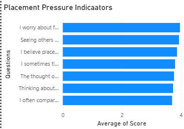
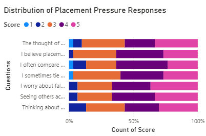
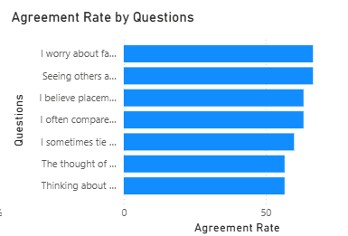

Beyond the Offer Letter
Understanding Placement Pressure Among Students

Hook
For many students, placement season begins long before the first interview.
It begins in late-night aptitude practice sessions, unfinished project deadlines, and promises made to themselves that this year will be different. It begins with preparation. With hope.
Then the results start arriving.
A student clears the online assessment but not the interview. Another reaches the final round only to receive a rejection email days later. Someone else watches classmates celebrate internship offers while refreshing their inbox for updates that never come.
One student described preparing harder than most people they knew, only to face rejection repeatedly. Eventually, the pain stopped coming from the rejection itself. It came from the feeling that effort was no longer producing results.
Another student spoke about watching others move forward while feeling stuck in the same place. Not because they were unwilling to work, but because they could not understand why the work was not translating into opportunities.
Placement season is often discussed as a gateway to employment. Yet for many students, it becomes something far more personal. It begins to shape how they view themselves, how they compare themselves with others, and how they imagine their future.
This raises an important question.
Research Question
How does placement pressure influence student confidence, self-worth, and perceptions of future success?
Methodology
To explore this question, a survey was conducted among 30 students using seven placement-related indicators.
Students responded on a five-point Likert scale ranging from Strongly Disagree (1) to Strongly Agree (5).
The survey examined themes such as peer comparison, confidence, placement outcomes, and future expectations.
To better understand the experiences behind the numbers, interviews were also conducted with students who had experienced placement season in different ways.
Their responses provide insight into how placement pressure is felt beyond what survey scores alone can capture.
Finding 1: Placement Pressure Is About More Than Getting a Job

Figure 1. Placement Pressure Indicators
The survey produced a Placement Pressure Index of 3.82 out of 5, indicating a relatively high level of placement-related concern among respondents.
At first glance, this may appear unsurprising. After all, placements determine employment opportunities. Students are expected to care about them.
What is more revealing, however, is where this pressure seems to come from.
Students did not simply express concern about finding jobs. High scores appeared across indicators related to confidence, peer comparison, future success, and self-perception.
The pressure extended far beyond recruitment outcomes.
Psychologically, this makes sense. Career opportunities are rarely viewed as isolated events. Students often see them as evidence that years of effort, preparation, and sacrifice have finally been validated.
When outcomes carry that much meaning, placements stop being just about employment. They become reflections of progress and capability.
The findings suggest that students are not merely asking, “Will I get placed?”
Am I doing enough?
Am I falling behind?
Will my effort eventually be worth it?
Finding 2: The Fear of Falling Behind May Matter More Than Failure

Figure 2. Agreement Rate by Placement Indicators
Among all indicators, some of the strongest levels of agreement were associated with peer comparison and concerns about falling behind classmates.
This finding highlights an important psychological reality: people rarely evaluate themselves in isolation.
Students naturally compare their progress with those around them. During placement season, these comparisons become almost impossible to avoid.
Every internship announcement, every successful interview, and every offer letter becomes a visible marker of someone else's progress.
For students still waiting for their opportunity, these moments can carry emotional weight.
One interview participant described watching people move forward despite feeling they had prepared just as hard, if not harder.
The frustration did not come from another person's success. It came from not understanding why their own effort seemed unable to produce similar results.
Another student described feeling excluded before even entering the race because eligibility requirements prevented participation in many opportunities.
Their experience reveals that placement pressure is not always about failing after trying.
Sometimes it comes from never being given the opportunity to try at all.
The data suggests that students fear more than rejection.
They fear being left behind.
Finding 3: When Career Outcomes Become Personal

Figure 3. Distribution of Placement Pressure Responses
Most survey responses were concentrated within the Agree (4) and Strongly Agree (5) categories.
The strongest responses were linked to statements connecting placements with confidence, self-image, and future success.
This pattern reflects something many students may recognize but rarely discuss openly.
Logically, most people understand that one interview result does not define their worth.
Emotionally, that distinction is much harder to maintain.
When months of preparation are reduced to a single outcome, it becomes easy to interpret that outcome as evidence about oneself.
Success can feel like validation. Rejection can feel like proof of inadequacy—even when it isn't.
One student explained that repeated setbacks eventually caused them to question not only their preparation but also their abilities.
Another reflected on how a single rejection exposed insecurities they had not previously noticed.
The survey findings suggest that placement outcomes increasingly influence how students see themselves, not just how they view their careers.
Student Voices
Although their circumstances differed, the underlying emotions were remarkably similar: uncertainty, comparison, frustration, and the desire for reassurance that their efforts would eventually matter.
Analysis and Interpretation
Perhaps the most important finding is that placement pressure is rarely about placements alone.
The survey and interviews suggest that placements have become symbolic.
They represent achievement, competence, progress, and sometimes even identity.
Students often spend years hearing that hard work leads to success. Placement season is where that belief is tested.
When effort produces results, confidence grows. When it does not, students are left trying to understand what went wrong.
This uncertainty appears to be one of the most emotionally difficult aspects of the process.
Students are not only worried about employment.
They are worried about whether their effort matters.
Whether they are progressing at the right pace.
Whether they are enough.
Conclusion
The findings suggest that placement pressure affects far more than career outcomes.
With a Placement Pressure Index of 3.82 out of 5, students reported concerns related to confidence, peer comparison, self-perception, and future success.
Fear of falling behind classmates emerged as a particularly significant source of stress, while many students linked placement outcomes to broader questions of identity and self-worth.
Ultimately, placement season is not experienced solely as a recruitment process.
For many students, it becomes a period where ambition, comparison, confidence, and uncertainty intersect.
The offer letter may represent the outcome.
But the pressure begins long before it arrives.